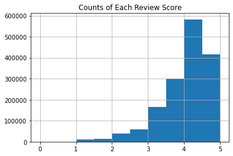
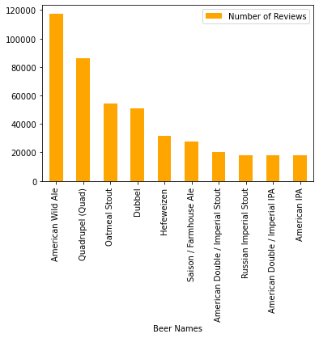

ABV vs Beer Rating
Sit Back, Relax, and Enjoy a Beer!
Counts of Each Review Score

Figure 1. The Majority of the review scores are 4.0 or higher. The rating data skews to the right, meaning that the majority of the review scores will be higher.
Top 10 Beers and Breweries

 Figure 2. (Left) The top 10 highest rated breweries in the data base are around 4.5. (Right) However, there is a large discrepancy between the number of overall reviews the top rated breweries received. For example, the second highest rated brewery, The Alchemist Pub & Brewery, has the least amount of reviews.
Figure 2. (Left) The top 10 highest rated breweries in the data base are around 4.5. (Right) However, there is a large discrepancy between the number of overall reviews the top rated breweries received. For example, the second highest rated brewery, The Alchemist Pub & Brewery, has the least amount of reviews.


Figure 3. (Left) The top 10 highest rated beer types range in the low 4.0s. (Left) The highest rated beer type, American Wild Ale, was also the most rated beer type. Number of reviews seems less associated to review score in beer type than breweries.
ABV Distribution
 Figure 4. The average ABV for this dataset is around 8%. However, there are a large number of outliers both at the lower and higher end of the ABV range.
Figure 4. The average ABV for this dataset is around 8%. However, there are a large number of outliers both at the lower and higher end of the ABV range.